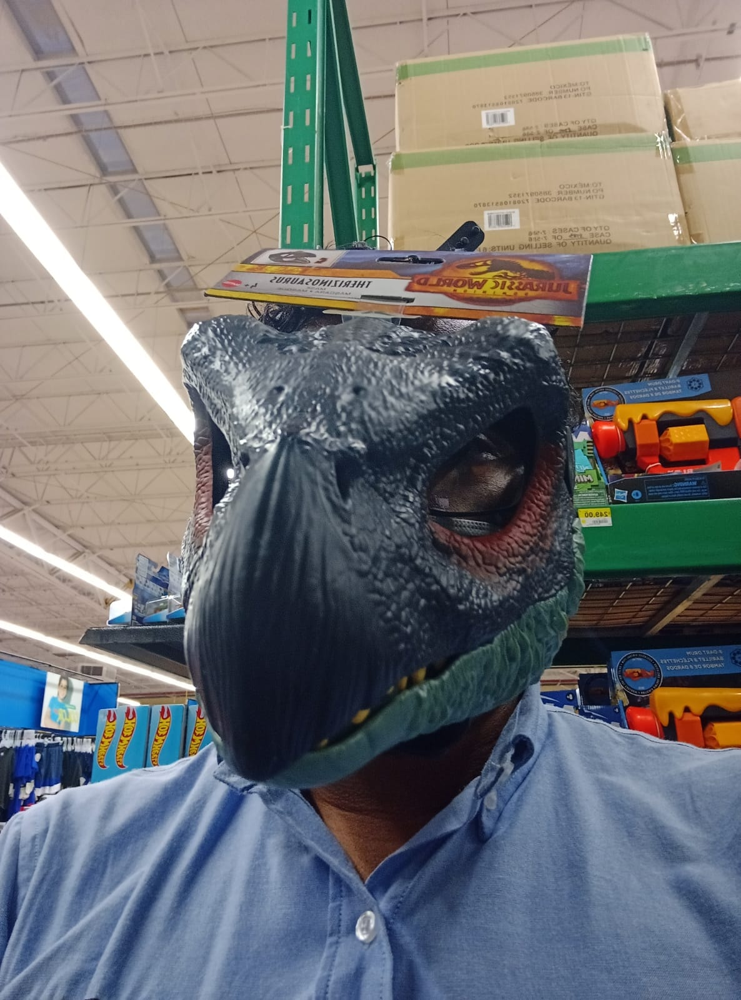

Eduardo García
Esta es una de mis fotos favoritas

Breve Biografía
Mi nombre es Jesús Eduardo García Canto, nací el 3 de agosto de 1995 en Villahermosa, Tabasco, soy el mayor de 3 hermanos y actualmente soy padre de un pequeño de 4 años.
Me gusta mucho escuchar música, andar en moto y jugar videojuegos.
Quisiera poner mas cosas sobre mi pero ya no me queda mucho tiempo y Tan ya nos dio 10 min extra.
Mi mayor logro profesional
Uno de mis mayores logros ha sido poder ser gerente de una franquicia a una corta edad, ya que a los 21 años logre hacerlo, siendo el gerente más joven toda la historia esta sucursal.
Y tambien fui el primer gerente dinosaurio, anexo evidencias.

Lista mis 5 bebidas favoritas
- Cerveza
- Ginebra
- Horchata de arroz
- Pozol con cacao
- Coca Cola con café
- Carajillo
Mi música favorita del momento
- Ella Baila Sola - Eslabon Armado y Peso Pluma
- Luis Miguel - La Gloria Eres Tú
- Bullet For My Valentine - Tears Don't Fall
- Natanael Cano x Gabito Ballesteros x Peso Pluma - AMG
- Junior H x Peso Pluma x Gabito Ballesteros - El Tsurito
Descripciones
- Funciones
- Son un conjunto de instrucciones que realiza una tarea o calcula un valor.
- Let
- La instrucción let declara una variable de alcance local con ámbito de bloque(blockscope), la cual, opcionalmente, puede ser inicializada con algún valor.
- Const
- Esta declaración crea una constante cuyo alcance puede ser global o local para el bloque en el que se declara. Es necesario inicializar la constante, es decir, se debe especificar su valor en la misma sentencia en la que se declara, lo que tiene sentido, dado que no se puede cambiar posteriormente.
- Etiqueta b
- Indica que el texto debe ser representado con una variable bold, o negrita,de la tipografía que se esté usando.
- Etiqueta i
- Muestra el texto marcado con un estilo en cursiva o italica.
- Etiqueta u
- Muestra el texto subrayado.
Lista anidada de colores
- Negro
- Oscuro
- Muy oscuro
- Poquito oscuro
- Relavado
- Prieto
- Amarillo
- Pollito
- Pikachu
- Hepatitis
- Verde
- Limon
- Moco
- Con infección
- Sin infección
- Planta